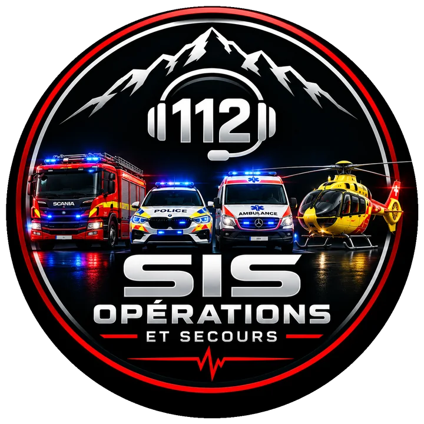
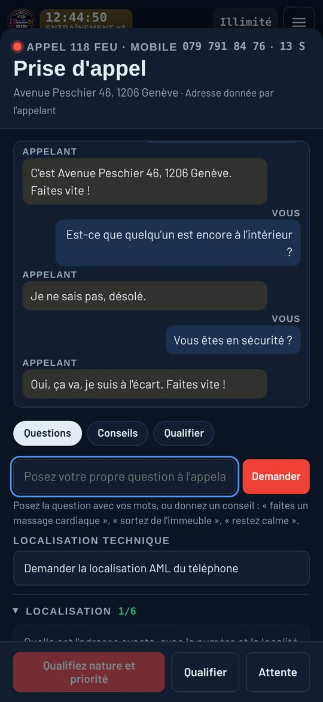
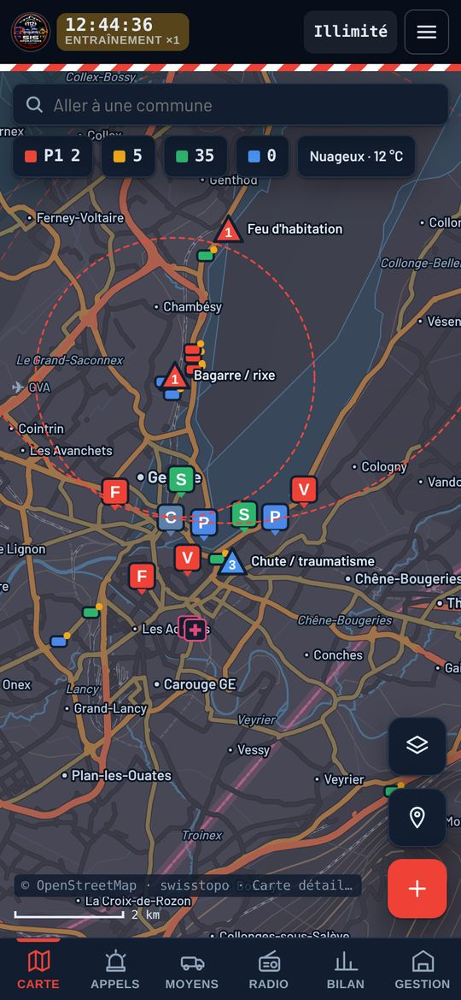
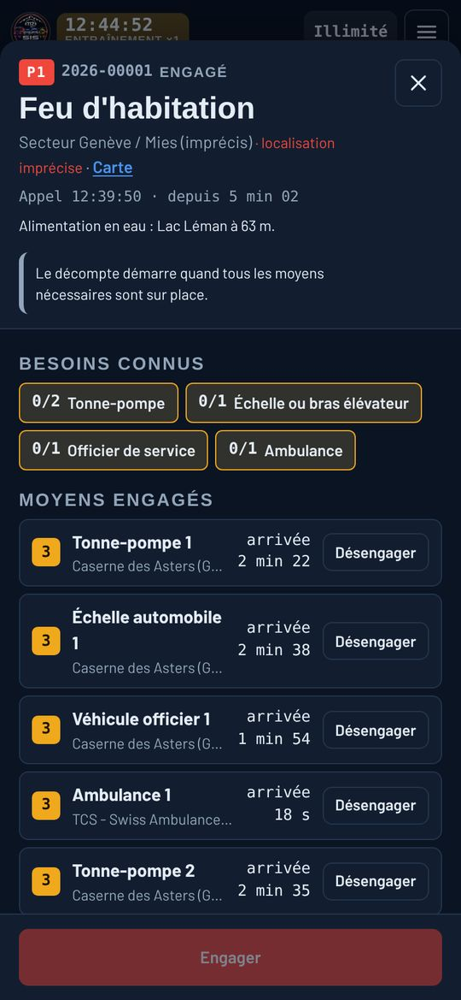
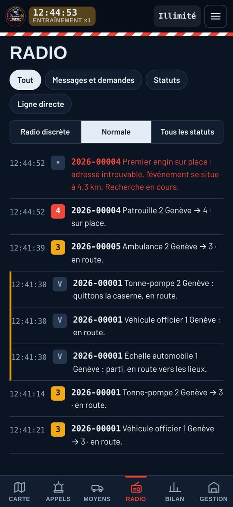

Catastrophes
Séisme, crue ou tempête : des dizaines d'appels en quelques minutes. Message d'attente, état-major, renforts du canton et de l'armée.

En cours de développement · bientôt disponible (normalement décembre 2026)
Vous êtes l'opérateur de la centrale. Vous décrochez, vous questionnez, vous engagez pompiers, police, ambulances et hélicoptère sur les vraies routes de Suisse et de France, puis vous suivez chaque intervention jusqu'à l'hôpital.
Dans le navigateur, sur téléphone comme sur ordinateur. Rien à installer.
Main courante, feu d'appartement à Genève
Tout se joue sur quatre écrans, pensés d'abord pour le téléphone.




Chaque appel cache une situation réelle. Vous la découvrez en posant les bonnes questions, et vos choix se paient sur le terrain.
La sonnerie vous dit déjà qui appelle : 112, 118, 144 ou 117. L'appelant parle, pleure ou se tait.
Adresse de l'abonné, position AML du portable, repères donnés par l'appelant. Une erreur de lieu coûte des minutes.
L'alarme part sur le poste, l'équipage quittance et sort de la caserne, sirène hurlante en priorité 1.
En attendant les secours, vous restez en ligne : massage cardiaque, mise en sécurité, évacuation.
Statuts radio, message d'ambiance, demandes de renfort. Un feu reprend, un forcené se retranche, un colis suspect bloque la gare.
Hôpital choisi selon la filière, rapport d'intervention, débriefing et note de qualité.
Séisme, crue ou tempête : des dizaines d'appels en quelques minutes. Message d'attente, état-major, renforts du canton et de l'armée.
Huit missions de plus en plus dures, du malaise au brigandage, sous la pluie, le brouillard ou le verglas. Chacune notée en étoiles.
Un chef de salle et jusqu'à huit opérateurs décrochent, questionnent et engagent ensemble dans la même centrale.
Entre centrales voisines, vous vous prêtez des engins, vous discutez et vous vous affrontez au défi de la semaine.
Ouvrez votre centrale à Genève, Lausanne ou Sion, ou bien à Annecy ou Lyon : les numéros, les services et les partenaires suivent le pays.
Chaque véhicule annonce son statut par radio. Vous le voyez sur la carte et dans la fiche de l'intervention.
Le simulateur est en cours de développement. L'ouverture au public est prévue bientôt (normalement décembre 2026).
Questions libres, vraies casernes, vraies routes, statuts radio en Suisse et en France.
Renforts, hôpitaux, hélicoptères, catastrophes, recherches de police.
Des milliers de gardes simulées pour corriger les détails, du texte radio au trajet des engins.
Accès pour tous, normalement décembre 2026. Les inscrits sont prévenus en premier et reçoivent un cadeau de bienvenue.
Laissez votre adresse e-mail : vous recevrez un message dès que le simulateur ouvre (normalement décembre 2026), avec un cadeau de bienvenue pour équiper votre centrale.
Vous serez prévenu par e-mail dès l'ouverture du simulateur. Pas de publicité, rien d'autre que cette annonce.
Les inscriptions ouvrent très bientôt. Revenez dans quelques jours.